mlm-workshop
Philip
1 december 2018
Overview
The goal of the following is to serve as breadth first introduction to using brms to estimate multi-level regression models. By doing so, the hope is to sketch a complete Baysian workflow and touch on the many practical considerations one comes across when fitting statistical models. Even though the workshop is geared towards multi-level models, brms supports single level models and as the workflow used here applies also in that case.
Load data and packages
library(brms)
library(ggplot2)
library(bayesplot)
library(tidyverse)
library(kableExtra)
library(brmstools)
library(sjstats)#set up number of cores to use for fitting
n_cores <- parallel::detectCores()-1d <- read.delim(url("https://raw.githubusercontent.com/philipparnamets/mlm-workshop/master/data/d_export.txt"))summary(d)## Subject Stimuli Trustworthy Face_trust RT
## Min. :13712 Min. : 1 Min. :-0.5 Min. :2.8 Min. : 0
## 1st Qu.:14293 1st Qu.:16 1st Qu.:-0.5 1st Qu.:3.2 1st Qu.: 1
## Median :14767 Median :32 Median : 0.0 Median :3.4 Median : 1
## Mean :15343 Mean :32 Mean : 0.0 Mean :3.4 Mean : 2
## 3rd Qu.:16425 3rd Qu.:49 3rd Qu.: 0.5 3rd Qu.:3.6 3rd Qu.: 2
## Max. :17668 Max. :64 Max. : 0.5 Max. :4.2 Max. :33We will be working with real dataset. The data comes from a trust learning experiment and represents a subset of 30 participants. Each participants did 30 trials with social partners from a trustworthy group and 30 trials with social partners from an untrustworthy group.
The aim of the analysis will be to understand if participant response times differ between groups.
Data visualization and preparation
The first step of any data analysis is exploratory data analysis - plotting and understanding your variables. This is not only important of itself, but also to understand how the variables are distributed and to ensure that the dataset is in a format that is suitable for statistical modeling.
Relationship between RT and Trustworthiness
# create factor
d$Trustworthy_fac <- factor(d$Trustworthy, labels = c("Untrustworthy",
"Trustworthy"))
# summary table
d %>% group_by(Trustworthy_fac) %>%
summarise(Average = mean(RT),
Median = median(RT),
SD = sd(RT),
SE = SD/sqrt(n())) %>%
kable(.) %>%
kable_styling(., bootstrap_options = c("striped", "condensed"),
full_width = F)| Trustworthy_fac | Average | Median | SD | SE |
|---|---|---|---|---|
| Untrustworthy | 2.2 | 1.5 | 2.4 | 0.08 |
| Trustworthy | 1.8 | 1.3 | 1.8 | 0.06 |
# plot
ggplot(data = d) +
aes(x = Trustworthy_fac, y = RT,
fill = Trustworthy_fac) +
geom_violin() +
geom_boxplot(fill="gray",
notch = T ,
width = 0.4) Lot’s of outliers, let’s filter the data at 10s, just to make the plot more clear.
# plot
d %>% filter(RT<10) %>%
ggplot(data = .) +
aes(x = Trustworthy_fac, y = RT,
fill = Trustworthy_fac) +
geom_violin() +
geom_boxplot(fill="gray",
notch = T ,
width = 0.4) 
So we can see that the data appears to support there being a difference in response times between the groups.
Response time data are skewed and the following histogram makes that clear:
ggplot(d) +
aes(RT) +
geom_histogram(binwidth = 0.25)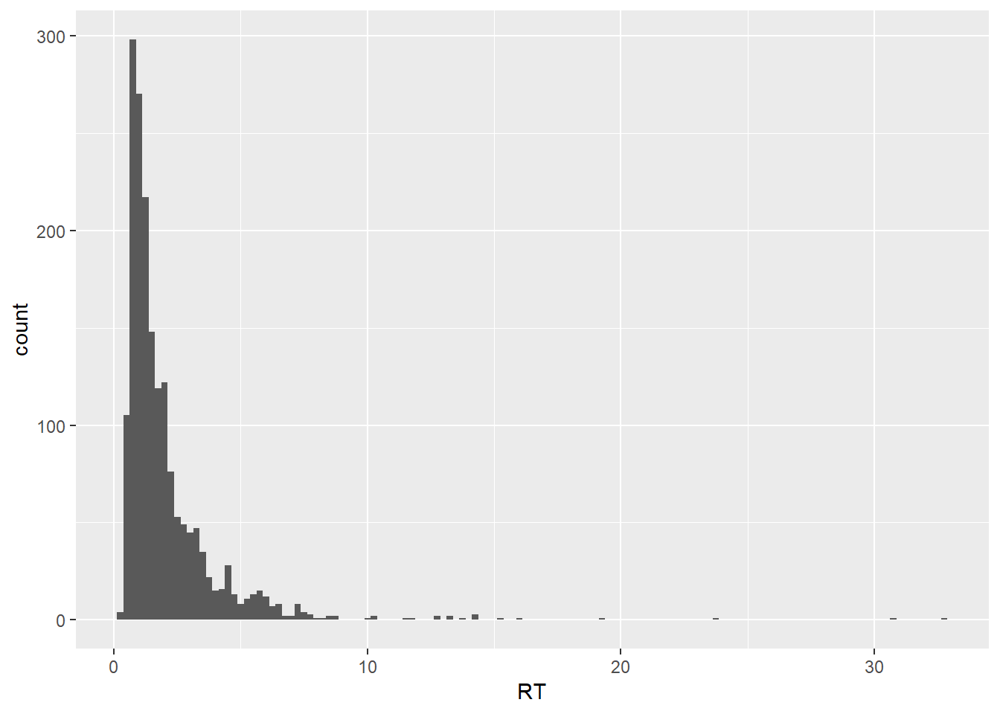
One way of dealing with this is log-transforming the data. In what follows we will use the untransformed data though, but see the Appendix for a model with this tranformation applied.
# log transform
d$RT_log <- log(d$RT)
#plot
ggplot(d) +
aes(RT_log) +
geom_histogram(binwidth = 0.1)Face trustworthiness
The variable Face_trust captures how trustworthy the face of the partner has been rated to be.
ggplot(d) +
aes(Face_trust) +
geom_histogram(binwidth = 0.1)
We want to scale the variable so it roughly has the same dimensions as our Trustworthiness variable, which I precoded to have the levels -0.5 and 0.5. Since the dataset is balanced, this means that both variables will effectively be means-centered, meaning the intercept of the regression model will have a natural interpretation.
# scale variable
d$Face_trust_s <- scale(d$Face_trust)Setting up the model
There are three important components to fitting a model in brms:
- Data
- Likelihood & model specification
- Prior
We have already set up our data.
Likelihood
In Bayesian statistics we think of the statistical model as a candidate generating process for the data we observed. In the case of the type of statistical models most commonly used - i.e. ANOVA’s or standard linear regressions - the underlying assumption is that the data were generated by adraws from a Gaussian (normal) distribution. This will also be our assumption in what follows. This is the likelihood function for our model. The likelihood is just as much part of the statisitcal model as the data, the parameters and the priors.
\[ \text{Response time} \sim \text{Normal}(\mu, \sigma) \]
We could have just as well chosen another likelihood if pragmatic (i.e. the data) or theoretical considerations motivated us to do so. brms supports a wide range of data generating processes, and additionally the option to custom code one in directly in Stan. To see the options available, you can type:
help("brmsfamily")The next step is to relate the parameters of the likelihood function to variables in the dataset. We assume that the variables we are interested affect the mean, \(\mu\), of the distribution and not its variance, \(\sigma^2\). (Stan and thus brms parametrizes the normal distribution with its standard deviation, \(\sigma\))
The model we want to fit in words: We want to estimate the effect of Trustworthiness on response times, while taking into account the facial features of the social partners and their interaction wtih Trustworthiness. Additionally, we want to allow all slopes and intercept vary within participants and stimuli. This latter statement summaries the multi-level aspect of the model.
We can translate this into the formula syntax used by brms, but also into notation. Depending on what you are used to seeing, either may be informative for you.
Model formula in brms
brms uses the same syntax as lme4, which simplifies the transition.
ff <-
bf(RT ~ 1 + Trustworthy + Face_trust_s + Trustworthy:Face_trust_s +
(1 + Trustworthy + Face_trust_s + Trustworthy:Face_trust_s | Subject) +
(1 + Trustworthy + Face_trust_s + Trustworthy:Face_trust_s | Stimuli))We could optionally also define the likelihood already here rather than in the call to brms later.
ff <-
bf(RT ~ 1 + Trustworthy + Face_trust_s + Trustworthy:Face_trust_s +
(1 + Trustworthy + Face_trust_s + Trustworthy:Face_trust_s | Subject) +
(1 + Trustworthy + Face_trust_s + Trustworthy:Face_trust_s | Stimuli),
family = gaussian())Model formula in notation
\[ y_i \sim \text{Normal}(\mu_i, \sigma) \]
\[ \mu_i \sim (\beta_0 + \beta_{0,subj[i]} + \beta_{0,stim[i]}) + (\beta_1 + \beta_{1,subj[i]} + \beta_{1,stim[i]})trust_i + (\beta_2 + \beta_{2,subj[i]} + \beta_{2,stim[i]})face_i + (\beta_3 + \beta_{3,subj[i]} + \beta_{3,stim[i]})tXf_i \]
\[ \begin{bmatrix} \beta_{[0,subj]} \\ \beta_{[1,subj]} \\ \beta_{[2,subj]} \\ \beta_{[3,subj]} \\ \end{bmatrix} \sim \text{MVNormal}( \begin{pmatrix} \begin{bmatrix} 0 \\ 0 \\ 0 \\ 0 \\ \end{bmatrix}, S_{subj} \end{pmatrix} \]
\[\begin{bmatrix} \beta_{[0,stim]} \\ \beta_{[1,stim]} \\ \beta_{[2,stim]} \\ \beta_{[3,stim]} \\ \end{bmatrix} \sim \text{MVNormal}( \begin{pmatrix} \begin{bmatrix} 0 \\ 0 \\ 0 \\ 0 \\ \end{bmatrix}, S_{stim} \end{pmatrix} \]
This is alot to take in, but let’s quickly break it down by line:
- This is just our likelihood.
- This is the regression relating the mean to our variables. There are a series of statements consisting of three parameters (\(\beta s\)) added together. The ones without additional subscripts are the population level-effects. In other words what we would fit if this was a single-level model. (Also known as fixed effects), The \(\beta s\) with additiona subscripts are the varying interecepts and slopes. (Also known as random effects). Each subject/stimulus gets its own deviation from the average effect.
- Is the likelihood for the by-subject varying interecepts and slopes. We assume that the effects are drawn from a multivariate normal distribution, with mean 0 and covariance matrix S (more on this later).
- Does the same as 3, but for the subjects.
It is totally ok not to be comfortable with this if this is the first time you see the model laid out like this. Importantly, this is the same formulation as if you had been using a frequentist modeling approach and specified the formula in lme4 instead!
Priors
The arguably most tricky bit when it comes to getting started with Bayesian modeling is setting and understanding priors.
Goals with priors:
- Capture explicit knowledge
- Regularize the parameters
- Identify your model
- Bayes factor optimal
We will mainly focus on regularizing (“weakly informative”) priors. Both as this helps the model to not get too excited about extreme data, and since in psychology we typically do not have the kind of stable quantiative information that would make explicit priors reasonable, (Although expections: Stroop effects, paramerter distributions in some cognitive models, standardized tests).
First we see what priors the model requires:
kable(get_prior(formula = ff, family = gaussian(),
data = d)) %>%
kable_styling(c("striped", "condensed"), full_width = F)| prior | class | coef | group | resp | dpar | nlpar | bound |
|---|---|---|---|---|---|---|---|
| b | |||||||
| b | Face_trust_s | ||||||
| b | Trustworthy | ||||||
| b | Trustworthy:Face_trust_s | ||||||
| lkj(1) | cor | ||||||
| cor | Stimuli | ||||||
| cor | Subject | ||||||
| student_t(3, 1, 10) | Intercept | ||||||
| student_t(3, 0, 10) | sd | ||||||
| sd | Stimuli | ||||||
| sd | Face_trust_s | Stimuli | |||||
| sd | Intercept | Stimuli | |||||
| sd | Trustworthy | Stimuli | |||||
| sd | Trustworthy:Face_trust_s | Stimuli | |||||
| sd | Subject | ||||||
| sd | Face_trust_s | Subject | |||||
| sd | Intercept | Subject | |||||
| sd | Trustworthy | Subject | |||||
| sd | Trustworthy:Face_trust_s | Subject | |||||
| student_t(3, 0, 10) | sigma |
We begin by setting some priors.
pp <- c(set_prior("normal(0,1)", class = "b"), #this is for the population average slopes
set_prior("normal(0,10)", class = "sd", group = "Subject"), #std dev of varying effects
set_prior("normal(0,5)", class = "sd", group = "Stimuli"), #std dev of varying effects
set_prior("normal(0,5)", class = "sigma"), # this is for the std dev of the likelihood ("residual")
set_prior("lkj(3)", class = "cor", group = "Stimuli"), #correlation of varying effects
set_prior("lkj(3)", class = "cor", group = "Subject")) #correlation of varying effectsA good way of understanding what the priors imply is to plot them, for example:
plot(density(rnorm(1e6, 0, 1)),
main = "normal(0,1) prior",
xlab ="")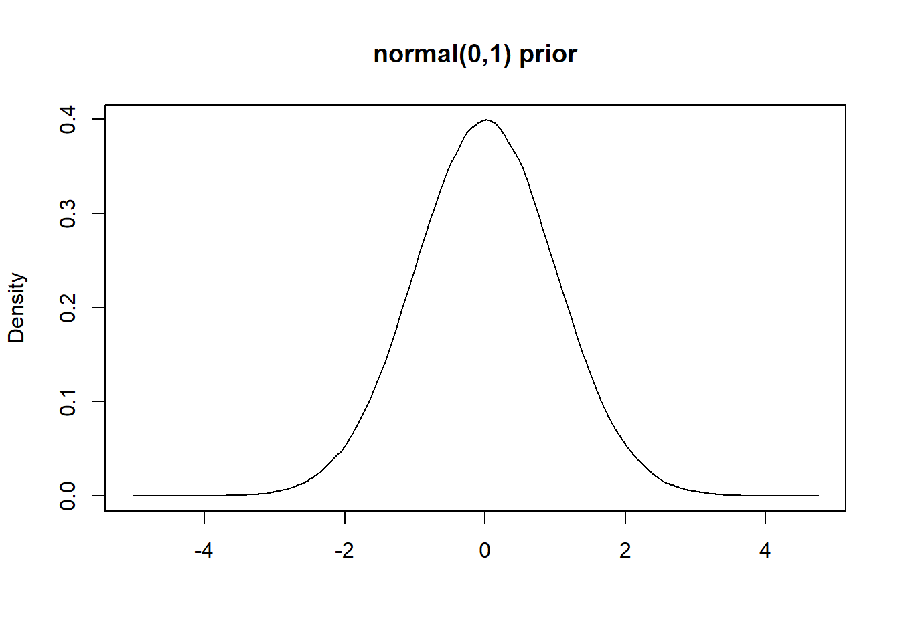
The LKJ(n) prior is a special prior for correlation matrices, where n=1 implies a flat distribution and n<1 more weight for extreme correlations and n>1 less weight for extreme correlations.
Nevertheless, it can be difficult to know what the combined implications of the priors is for what response times values the model will think are likely. For this, prior predictive checks are essential.
Prior predictive checks
The idea with prior predictive checks is to sample from the model, without taking the data into account. This will generate samples which reflect the priors and the likelihood only.
fit_rt <- brm(formula = ff,
data = d, family = gaussian(),
prior = pp,
chains = 6, cores = 3,
iter = 2e3, warmup = 1e3,
sample_prior = "only")## Compiling the C++ model## Start sampling#this plots the posterior density against the actual density
pp_check(fit_rt)## Using 10 posterior samples for ppc type 'dens_overlay' by default.#this plots the marginal predictions for each parameter and interaction
rt1_prior <- marginal_effects(fit_rt, re_formula = NULL,
method = "predict")
plot(rt1_prior, ask = F)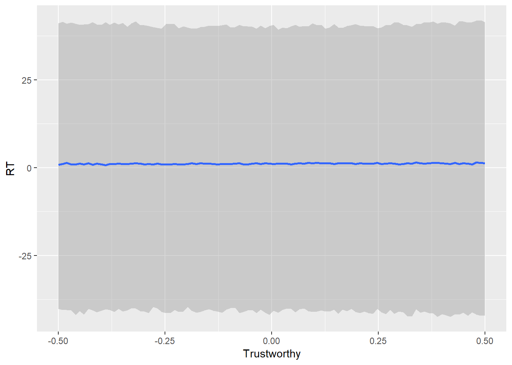 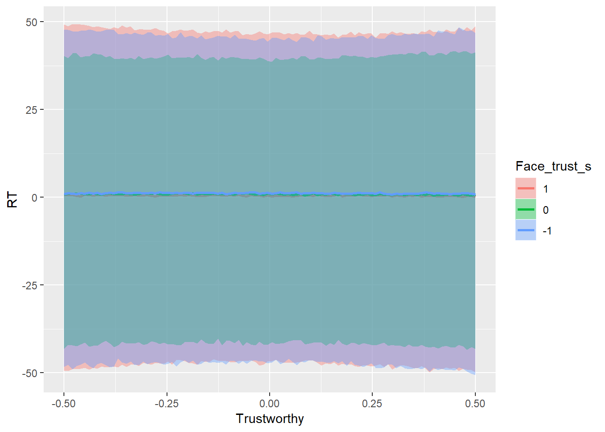
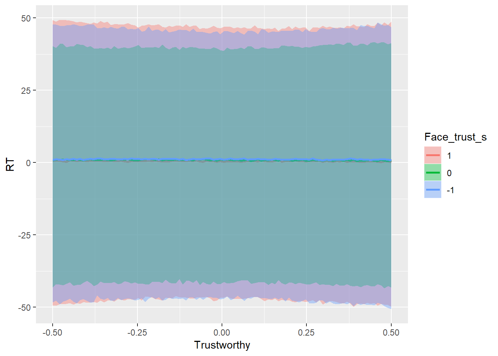
We can see the model generates values way more extreme than anything we observed. By tighteneing the priors the model will both sample more efficiently and be better at regularizing its estimates.
pp <- c(set_prior("normal(2,5)", class = "Intercept"),
set_prior("normal(0,1)", class = "b"), #this is for the population average slopes
set_prior("normal(0,1)", class = "sd", group = "Subject"),
set_prior("normal(0,1)", class = "sd", group = "Stimuli"),
set_prior("normal(0,5)", class = "sigma"),
set_prior("lkj(3)", class = "cor", group = "Stimuli"),
set_prior("lkj(3)", class = "cor", group = "Subject"))fit_rt2 <- brm(formula = ff,
data = d, family = gaussian(),
prior = pp,
chains = 6, cores = 3,
iter = 2e3, warmup = 1e3,
sample_prior = "only")## Compiling the C++ model## Start samplingpp_check(fit_rt2)## Using 10 posterior samples for ppc type 'dens_overlay' by default.
rt2_prior <- marginal_effects(fit_rt2, re_formula = NULL,
method = "predict")
plot(rt2_prior, ask = F)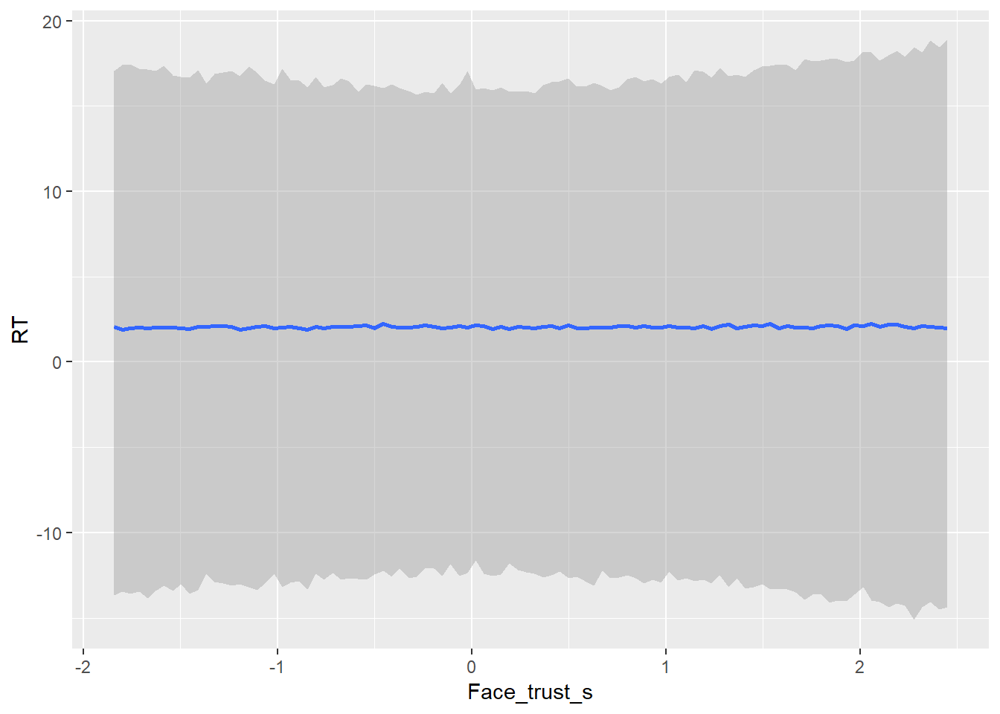
The model’s priors now covers a much more reasonable range of values.
The full model in notation
Let’s add our priors to the model specification:
\[ y_i \sim \text{Normal}(\mu_i, \sigma) \]
\[ \mu_i \sim (\beta_0 + \beta_{0,subj[i]} + \beta_{0,stim[i]}) + (\beta_1 + \beta_{1,subj[i]} + \beta_{1,stim[i]})trust_i + (\beta_2 + \beta_{2,subj[i]} + \beta_{2,stim[i]})face_i + (\beta_3 + \beta_{3,subj[i]} + \beta_{3,stim[i]})tXf_i \]
\[ \begin{bmatrix} \beta_{[0,subj]} \\ \beta_{[1,subj]} \\ \beta_{[2,subj]} \\ \beta_{[3,subj]} \\ \end{bmatrix} \sim \text{MVNormal}( \begin{pmatrix} \begin{bmatrix} 0 \\ 0 \\ 0 \\ 0 \\ \end{bmatrix}, S_{subj} \end{pmatrix} \]
\[ \begin{bmatrix} \beta_{[0,stim]} \\ \beta_{[1,stim]} \\ \beta_{[2,stim]} \\ \beta_{[3,stim]} \\ \end{bmatrix} \sim \text{MVNormal}( \begin{pmatrix} \begin{bmatrix} 0 \\ 0 \\ 0 \\ 0 \\ \end{bmatrix}, S_{stim} \end{pmatrix} \]
\[ \beta_0 \sim \text{Normal}(2,5) \\ (\beta_{1},\beta_{2},\beta_{3}) \sim \text{Normal}(0,1) \\ \sigma \sim \text{Normal}(0,5) \]
\[ S_{subj} = \begin{pmatrix} \sigma_{0,subj} & 0 & 0 & 0 \\ 0 & \sigma_{1,subj} & 0 & 0 \\ 0 & 0 & \sigma_{2,subj} & 0 \\ 0 & 0 & 0 & \sigma_{3,subj} \\ \end{pmatrix} R_{subj} \begin{pmatrix} \sigma_{0,subj} & 0 & 0 & 0 \\ 0 & \sigma_{1,subj} & 0 & 0 \\ 0 & 0 & \sigma_{2,subj} & 0 \\ 0 & 0 & 0 & \sigma_{3,subj} \\ \end{pmatrix} \]
\[ (\sigma_{0,subj},\sigma_{1,subj},\sigma_{2,subj},\sigma_{3,subj}) \sim \text{Normal}(0,1) \]
\[ R_{subj} \sim LKJ(3) \]
\[ S_{stim} = \begin{pmatrix} \sigma_{0,stim} & 0 & 0 & 0 \\ 0 & \sigma_{1,stim} & 0 & 0 \\ 0 & 0 & \sigma_{2,stim} & 0 \\ 0 & 0 & 0 & \sigma_{3,stim} \\ \end{pmatrix} R_{stim} \begin{pmatrix} \sigma_{0,stim} & 0 & 0 & 0 \\ 0 & \sigma_{1,stim} & 0 & 0 \\ 0 & 0 & \sigma_{2,stim} & 0 \\ 0 & 0 & 0 & \sigma_{3,stim} \\ \end{pmatrix} \]
\[ (\sigma_{0,stim},\sigma_{1,stim},\sigma_{2,stim},\sigma_{3,stim}) \sim \text{Normal}(0,1) \]
\[ R_{stim} \sim LKJ(3) \]
Fitting the model
Having gone through these steps, sampling from the model is now super-straightforward:
mod_rt2 <- brm(formula = ff,
data = d, family = gaussian(),
prior = pp,
chains = 6, cores = 3,
iter = 2e3, warmup = 1e3,
sample_prior = "yes",
control = list(adapt_delta = 0.8))## Compiling the C++ model## Start samplingModel diagnostics
Stan (and brms) will warn you if the model is having some particular problems converging. In particular it will tell you if there are divergent transitions, which are caused by the model not being able to explore the full parameter space. This can be tricky to fix, but models with divergent transitions should not be trusted. Changing the priors, and changing some of the sampler’s internal parameters can help - increasing adapt_delta over it’s default (0.8).
Other diagnostic quantities to pay attention to are the number of effective samples and \(\hat{R}\) values.
Both are accessed from the model summary:
summary(mod_rt2)## Family: gaussian
## Links: mu = identity; sigma = identity
## Formula: RT ~ 1 + Trustworthy + Face_trust_s + Trustworthy:Face_trust_s + (1 + Trustworthy + Face_trust_s + Trustworthy:Face_trust_s | Subject) + (1 + Trustworthy + Face_trust_s + Trustworthy:Face_trust_s | Stimuli)
## Data: d (Number of observations: 1800)
## Samples: 6 chains, each with iter = 2000; warmup = 1000; thin = 1;
## total post-warmup samples = 6000
##
## Group-Level Effects:
## ~Stimuli (Number of levels: 64)
## Estimate Est.Error l-95% CI
## sd(Intercept) 0.08 0.06 0.00
## sd(Trustworthy) 0.18 0.12 0.01
## sd(Face_trust_s) 0.09 0.06 0.00
## sd(Trustworthy:Face_trust_s) 0.24 0.13 0.02
## cor(Intercept,Trustworthy) -0.06 0.33 -0.67
## cor(Intercept,Face_trust_s) 0.04 0.33 -0.60
## cor(Trustworthy,Face_trust_s) 0.07 0.33 -0.59
## cor(Intercept,Trustworthy:Face_trust_s) 0.07 0.33 -0.56
## cor(Trustworthy,Trustworthy:Face_trust_s) 0.01 0.33 -0.63
## cor(Face_trust_s,Trustworthy:Face_trust_s) 0.09 0.32 -0.56
## u-95% CI Eff.Sample Rhat
## sd(Intercept) 0.21 3382 1.00
## sd(Trustworthy) 0.45 2777 1.00
## sd(Face_trust_s) 0.23 3295 1.00
## sd(Trustworthy:Face_trust_s) 0.51 2665 1.00
## cor(Intercept,Trustworthy) 0.59 7176 1.00
## cor(Intercept,Face_trust_s) 0.67 7657 1.00
## cor(Trustworthy,Face_trust_s) 0.67 6303 1.00
## cor(Intercept,Trustworthy:Face_trust_s) 0.68 5560 1.00
## cor(Trustworthy,Trustworthy:Face_trust_s) 0.63 6221 1.00
## cor(Face_trust_s,Trustworthy:Face_trust_s) 0.67 5574 1.00
##
## ~Subject (Number of levels: 30)
## Estimate Est.Error l-95% CI
## sd(Intercept) 0.87 0.12 0.67
## sd(Trustworthy) 0.53 0.14 0.27
## sd(Face_trust_s) 0.22 0.08 0.06
## sd(Trustworthy:Face_trust_s) 0.14 0.10 0.01
## cor(Intercept,Trustworthy) -0.40 0.20 -0.75
## cor(Intercept,Face_trust_s) 0.02 0.24 -0.45
## cor(Trustworthy,Face_trust_s) -0.14 0.26 -0.61
## cor(Intercept,Trustworthy:Face_trust_s) 0.19 0.32 -0.47
## cor(Trustworthy,Trustworthy:Face_trust_s) -0.02 0.31 -0.61
## cor(Face_trust_s,Trustworthy:Face_trust_s) -0.03 0.33 -0.63
## u-95% CI Eff.Sample Rhat
## sd(Intercept) 1.15 1863 1.00
## sd(Trustworthy) 0.83 2730 1.00
## sd(Face_trust_s) 0.38 1497 1.00
## sd(Trustworthy:Face_trust_s) 0.38 4134 1.00
## cor(Intercept,Trustworthy) 0.02 6196 1.00
## cor(Intercept,Face_trust_s) 0.48 8062 1.00
## cor(Trustworthy,Face_trust_s) 0.38 4354 1.00
## cor(Intercept,Trustworthy:Face_trust_s) 0.74 10213 1.00
## cor(Trustworthy,Trustworthy:Face_trust_s) 0.58 10964 1.00
## cor(Face_trust_s,Trustworthy:Face_trust_s) 0.61 8749 1.00
##
## Population-Level Effects:
## Estimate Est.Error l-95% CI u-95% CI Eff.Sample
## Intercept 2.03 0.16 1.71 2.36 1241
## Trustworthy -0.36 0.14 -0.64 -0.08 4877
## Face_trust_s 0.01 0.07 -0.12 0.14 6644
## Trustworthy:Face_trust_s 0.13 0.11 -0.09 0.36 9084
## Rhat
## Intercept 1.00
## Trustworthy 1.00
## Face_trust_s 1.00
## Trustworthy:Face_trust_s 1.00
##
## Family Specific Parameters:
## Estimate Est.Error l-95% CI u-95% CI Eff.Sample Rhat
## sigma 1.90 0.03 1.84 1.97 9218 1.00
##
## Samples were drawn using sampling(NUTS). For each parameter, Eff.Sample
## is a crude measure of effective sample size, and Rhat is the potential
## scale reduction factor on split chains (at convergence, Rhat = 1).But can also be visualized using the Bayesplot package.
For \(\hat{R}\) these should be approximately 1, and definitely no larger than 1.1.
all_hats <- rhat(mod_rt2)
color_scheme_set("red")
mcmc_rhat_hist(all_hats)## `stat_bin()` using `bins = 30`. Pick better value with `binwidth`.Effective sample size is a measure of how well the model is approximating the posterior distribution of interest. If there are very few effective samples, the resulting posterior is less reliable. This might be due to autocorrelation in the samples. Typically you can sample your model for longer to get more effective samples out of it.
Here we see that some parameters have a lower ratio of effective samples than others, but none are lower than 0.1, which is a heuristic value for when we should really worry:
neffs <- neff_ratio(mod_rt2)
mcmc_neff_hist(neffs)## `stat_bin()` using `bins = 30`. Pick better value with `binwidth`.
#here we can see which parameters were affected
mcmc_neff(neffs[neffs<0.5]) + yaxis_text(hjust = 1)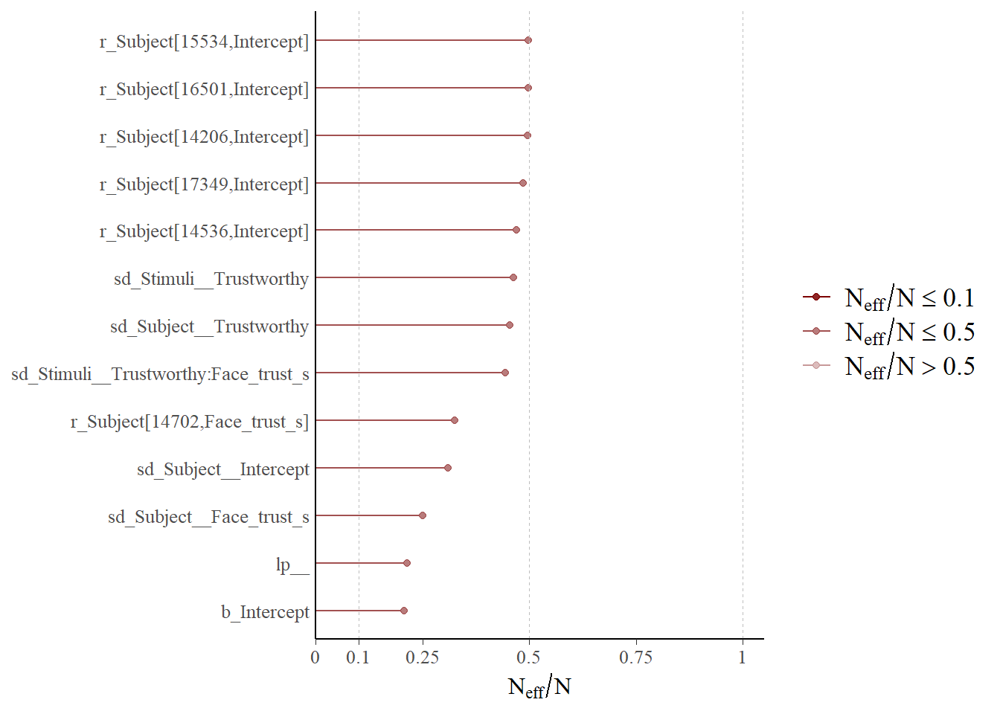
If we had been worried about this, we might have wanted to plot the autocorrelation of, say, the intercept. We compare it with another parameter to see the difference:
post <- posterior_samples(mod_rt2, c("b_Intercept", "b_Trustworthy"))
mcmc_acf(post[,1:2])>>>If we had not been happy with the model diagnostics, we would refit the model before proceeding<<<
Working with the posterior
The posterior samples reflect the outcome of the model fitting. We use this to further refine our understanding of the model and to hopefully learn something about the data that we are modelling.
Posterior predictive checks
The first thing is to see if the model is capturing relevant features of the data - in other words, if it plausibly is capturing the underlying data generating process.
pp_check(mod_rt2)## Using 10 posterior samples for ppc type 'dens_overlay' by default.
Unurprisingly, our gaussian model cannot capture the full distribution of the data. (But we kind of knew that already, so let’s ignore it for now).
Another way of seeing this is how the minimum and maximum predictions differ from those in the data:
#make a matrix of posterior predictions
y_pred <- predict(mod_rt2,
nsamples = 500, #500 samples per row of the original data frame
summary = F) #if =TRUE, then we will get the mean and 95% CIs instead
dim(y_pred)## [1] 500 1800#minimum value
ppc_stat(y = d$RT, yrep = y_pred,
stat = "min",
binwidth = 0.05)
This reinforces what we knew from the density overlay above.
#maximum value
ppc_stat(y = d$RT, yrep = y_pred,
stat = "max",
binwidth = 0.05)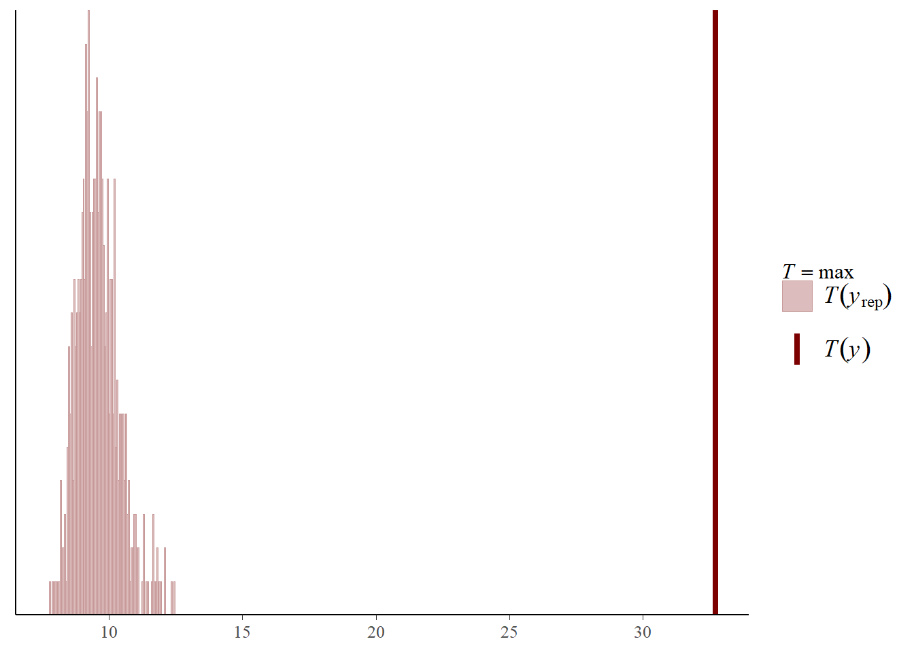
This reinforces what we know from the prior-predictive checks, the model will not predict extremely large values. In this case, we would probably consider the response time of 30s to be an outlier, and not be concerned about this at all..
We can also make posterior checks dependent on leves of a grouping variable. For example how good is the model at capturing the mean?
ppc_stat_grouped(y = d$RT,
yrep = y_pred,
group = d$Trustworthy_fac,
binwidth = 0.025)
Just like when we looked at the prior predictive checks, we can get the marginal predictions:
plot(marginal_effects(mod_rt2), ask = F)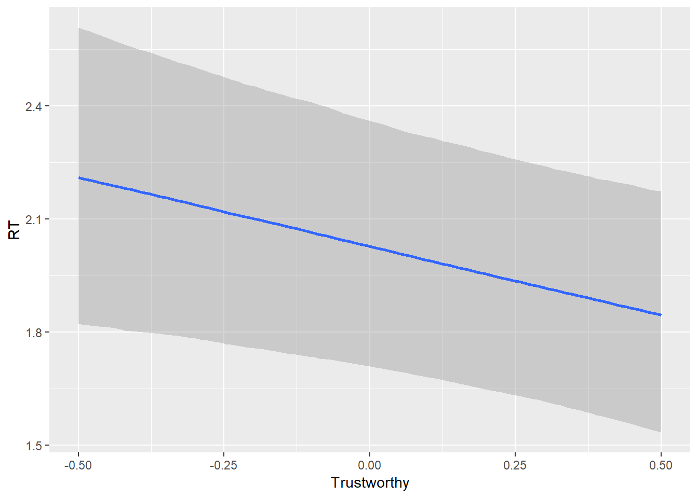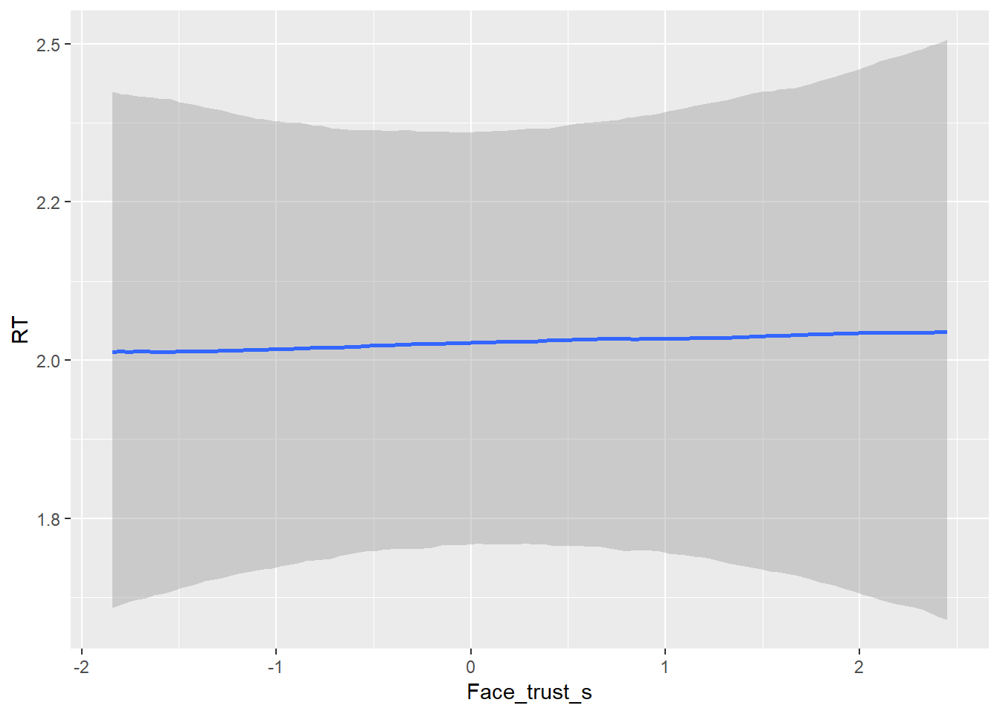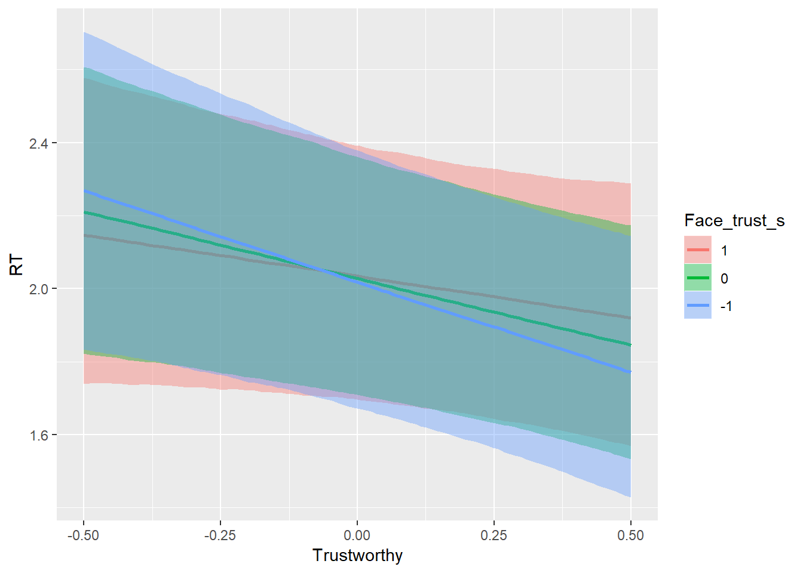
You could also make your own plot by using the y_pred values, since these are really the same thing. Here we show the full posterior distribution as a boxplot, the average RT in the data (black) and the average predictions (red dot).
d$mu_pred <- apply(y_pred,2,mean)
ggplot(d) +
aes(x=Trustworthy_fac, y = mu_pred) +
geom_boxplot(notch = T) +
stat_summary(mapping = aes(y=RT, x = Trustworthy_fac),
fun.data = "mean_se", geom = "linerange", size = 2) +
stat_summary(fun.data = "mean_se", colour = "red")
Summarizing the model
We have already seen the full model summary. Let’s make some visualizations as well.
To do so we will extract samples from the model.
post <- posterior_samples(mod_rt2, "^b")
# ^b is regular expression to select all the population level parameters (beginning with "b_"))We can plot the coefficients:
mcmc_intervals(post)
We are not particularly interested in the intercept, given how the model was set up, so lets omit it:
mcmc_areas(post[,-1],
prob = 0.8,
prob_outer = 0.95)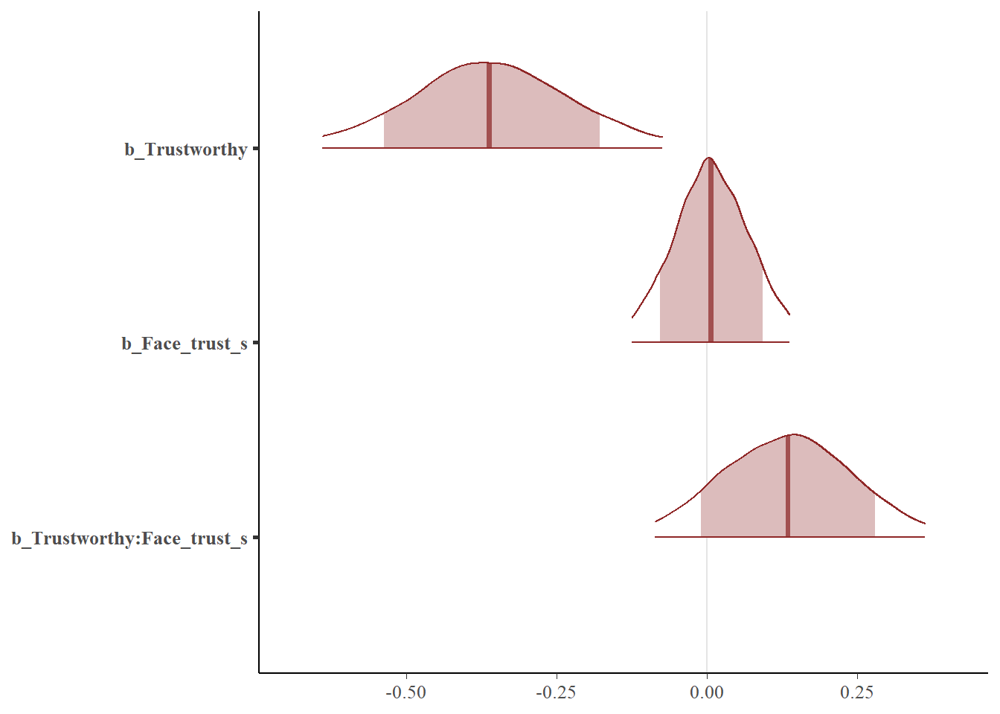
Having fit a multi-level model we have access to lots of other parameters that we wouldn’t have had otherwise. Let’s a quick example. First, we extract the correlation estimates for the Subject level parameters.
post <- posterior_samples(mod_rt2, "^cor_Subject") #correlation parameters
mcmc_areas(post,
prob = 0.8,
prob_outer = 0.95)
We see that a fairly large negative correlation between subjects’ interecept and slopes of Trustworthiness. This would indicate that participants that are slower overall, also differentiate less between conditions in the speed of their responses. To see this, we can look at the estimates for the actual slopes for each participant.
post <- posterior_samples(mod_rt2, "^r_Subject") # all Subject level parameters
dim(post) #120 parameters, 30 subject * 4 estimates## [1] 6000 120Here we plot the average slope, with lines indicating the uncertainty in the estimate (50% level)
mu_slopes <- apply(post, 2, mean)
mu_uncert <- apply(post, 2, function(x) quantile(x, c(0.25,.75)))
plot(x = mu_slopes[1:30], y = mu_slopes[31:60],
xlab = "Intercept", ylab = "Effect of Trustworthiness",
pch = ".", cex = 5)
abline(h=0, lty = 2)
grid(col = "gray")
segments(x0 = mu_slopes[1:30],
y0 = mu_uncert[1, 31:60],
y1 = mu_uncert[2, 31:60],
lwd = 1, col = "darkgray")
segments(y0 = mu_slopes[31:60],
x0 = mu_uncert[1, 1:30],
x1 = mu_uncert[2, 1:30],
lwd = 1, col = "darkgray")
Group varying estimates are deviations from the average, population level estimate. So to understand this plot in terms of the actual effect implied we need to add the population level.
mu_slopes <- apply(post, 2, mean)
mu_uncert <- apply(post, 2, function(x) quantile(x, c(0.25,.75)))
trust_av <- fixef(mod_rt2)[2,1]
inter_av <- fixef(mod_rt2)[1,1]
plot(x = mu_slopes[1:30]+inter_av,
y = mu_slopes[31:60]+trust_av,
xlab = "Intercept", ylab = "Effect of Trustworthiness",
pch = ".", cex = 5)
abline(h=0, lty = 2)
grid(col = "gray")
segments(x0 = mu_slopes[1:30]+inter_av,
y0 = mu_uncert[1, 31:60]+trust_av,
y1 = mu_uncert[2, 31:60]+trust_av,
lwd = 1, col = "darkgray")
segments(y0 = mu_slopes[31:60]+trust_av,
x0 = mu_uncert[1, 1:30]+inter_av,
x1 = mu_uncert[2, 1:30]+inter_av,
lwd = 1, col = "darkgray")From this plot we also see that for example two participants have a positive effect of Trustworthiness. We can plot the group-level average slopes together with population level slope to get a sense for this variation in relation to the average effect. (note that this tool would be particularly useful if you are doing a “random effects” meta analysis)
forest(mod_rt2, grouping = "Subject", pars = "Trustworthy")## Picking joint bandwidth of 0.0555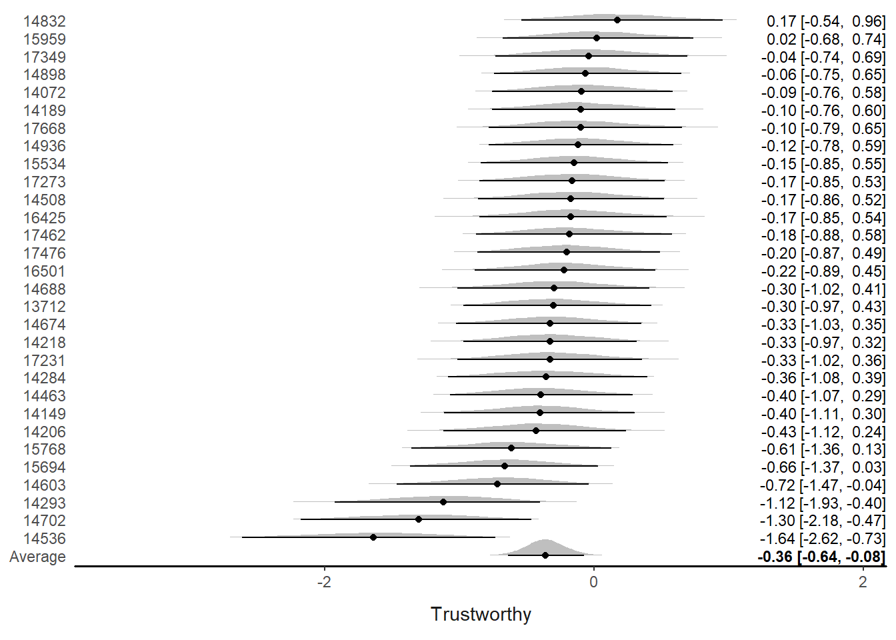
R2
In some situations it can be interesting to calculate \(R^2\). The quantity computed is a Bayesian generalization of the typical \(R^2\).
bayes_R2(mod_rt2)## Estimate Est.Error Q2.5 Q97.5
## R2 0.2 0.017 0.17 0.23As with all things Bayesian, we not only get a point estimate but also a distribution.
# get full posterior
r2 <- data.frame(bayes_R2(mod_rt2, summary = F))
ggplot(data =r2) +
aes(x = R2) +
geom_density(fill = "firebrick")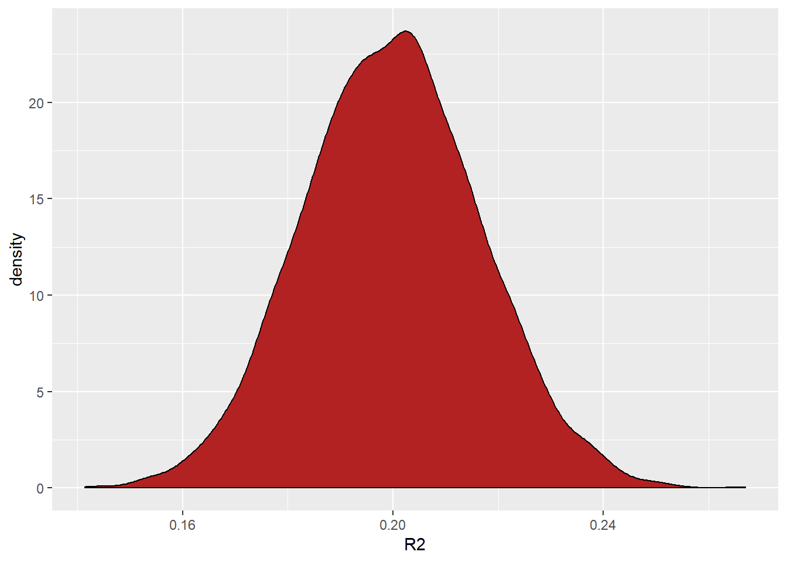
Inference
What conclusions can we draw from the model regarding the parameter estimates and the effect of Trustworthiness on response times?
Posterior probabilities
The most straightforward method is to assess the posterior distribution of the parameter of interest, in this case, the coefficient of trustworthiness.
For a typical two-sided inference, we can consider the posterior credible interval, for example the 97% interval, and see if this doesn’t include 0:
q_97 <- quantile(post$b_Trustworthy, c(0.015, 0.985))
q_97## 1.5% 98%
## NA NAWe can also calculate the posterior probability that the effect is less than 0:
prob <- sum(post$b_Trustworthy<0)/length(post$b_Trustworthy)
paste(prob*100,"% of samples are less than 0")## [1] "NaN % of samples are less than 0"We can straightforwardly combine this information in a plot:
post <- posterior_samples(mod_rt2, "^b")
mcmc_hist(post, "b_Trustworthy", binwidth = 0.025) +
geom_vline(xintercept = 0, size = 1.5, linetype = "dashed") +
geom_segment(aes(x = q_97[1], xend = q_97[2], y = 5, yend = 5),
size = 1.5, colour = "blue") +
annotate("text",
x = mean(q_97), y = 20,
label = paste("97% CI: [", round(q_97[1],2), "," , round(q_97[2],2), "]" ),
colour = "blue", fontface = 2) +
annotate("text",
x = -0.9, y = 300,
label = paste(prob*100,"% of samples \nare less than 0"),
fontface = 2)## Warning: Removed 6000 rows containing missing values (geom_segment).## Warning: Removed 1 rows containing missing values (geom_text).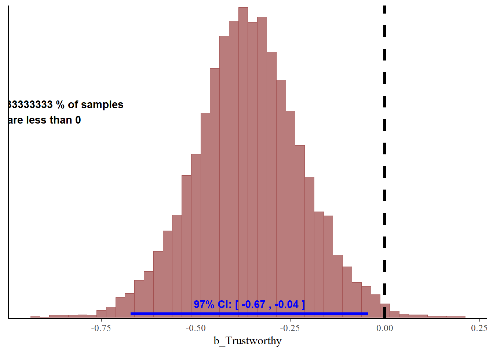
HDI & ROPE
An alternative to quantile-based credible intervals is the HDI (Highest posterior Density Interval). The HDI is constructed to be the narrowest range containg X% of the posterior samples. In many cases these will be the same (symmetric posteriors centered on the mode/median). John Kruschke has written a lot about the HDI & ROPE approach.
To get HDI intervals:
hdi(mod_rt2, prob= c(.89, .97))##
## # Highest Density Interval
##
## HDI(89%) HDI(97%)
## b_Intercept [ 1.77 2.30] [ 1.67 2.40]
## b_Trustworthy [-0.58 -0.13] [-0.67 -0.04]
## b_Face_trust_s [-0.10 0.11] [-0.14 0.16]
## b_Trustworthy.Face_trust_s [-0.05 0.31] [-0.11 0.38]
## sigma [ 1.85 1.95] [ 1.83 1.97]The sjstats package also allows us to get a summary with HDIs:
tidy_stan(mod_rt2)##
## # Summary Statistics of Stan-Model
##
## estimate std.error HDI(89%) ratio rhat mcse
## Intercept 2.03 0.16 [ 1.77 2.30] 0.21 1 0
## Trustworthy -0.36 0.13 [-0.58 -0.13] 0.81 1 0
## Face_trust_s 0.01 0.06 [-0.10 0.11] 1.11 1 0
## Trustworthy.Face_trust_s 0.13 0.11 [-0.05 0.31] 1.51 1 0
## sigma 1.90 0.03 [ 1.85 1.95] 1.54 1 0We can use the HDIs just as the credible intervals in the previous section. But they come into their own when combined with ROPE-testing. (ROPE = Region of Practical Equivalence). The ROPE defines the ranges of parameter values that we consider to be equivalent to a null finding. We then compare the HDI to the ROPE to make a decision about the parameter. If the HDI excludes the parameter entirely, we reject the ROPE region. If the HDI is entirely within the ROPE, we accept the ROPE values. And otherwise we are undecidided. (BUT We can still make probabilistic statements about our parameter!)
Defining a ROPE is tricky, and will depend on knowledge about the effect of interest and the underlying theory. Here pre-registration can play a strong role.
For our example, let’s say we consider effects smaller than 75ms as meaningless and equivalent to 0. (Of course, there is nothing that says that you have to have the same ROPEs for all parameters, but if you scaled the variables you likely will..)
This tells us how much of the posterior is inside and outside the ROPE region.
rope(mod_rt2, rope = c(-0.075,0.075))##
## # Proportions of samples inside and outside the ROPE
##
## inside outside
## b_Intercept 0.0% 100.0%
## b_Trustworthy 2.3% 97.7%
## b_Face_trust_s 73.4% 26.6%
## b_Trustworthy.Face_trust_s 27.1% 72.9%
## sigma 0.0% 100.0%To get the full equivalence test:
equi_test(mod_rt2, rope = c(-.075,.075))##
## # Test for Practical Equivalence of Model Predictors
##
## Effect Size: 0.10
## ROPE: [-0.07 0.07]
## Samples: 6000
##
## H0 %inROPE HDI(95%)
## b_Intercept (*) reject 0.00 [ 1.71 2.36]
## b_Trustworthy reject 2.30 [-0.64 -0.08]
## b_Face_trust_s undecided 73.38 [-0.12 0.14]
## b_Trustworthy.Face_trust_s undecided 27.10 [-0.10 0.35]
## sigma reject 0.00 [ 1.84 1.97]##
## (*) the number of effective samples may be insufficient for some parametersCurrently, these functions use 95% HDIs, but this hopefully will change in a future release.
Bayes Factors
Another method of inference is via Bayes Factors which quanitify the relative evidence in favor or against the null hypothesis. While it is possible to calculate Bayes Factors for entire models (see the bridgesampling package ) , we will look at a simpler method at the parameter level. This is the Savage-Dickey ratio, which simply is the ratio between the prior density and the posterior density at the test value for your hypothesis (0 for a typical null hypothesis).
h <- hypothesis(mod_rt2,
c("Trustworthy=0",
"Face_trust_s=0",
"Trustworthy:Face_trust_s=0"))
kable(h$hypothesis) %>%
kable_styling(c("condensed", "striped"), full_width = F)| Hypothesis | Estimate | Est.Error | CI.Lower | CI.Upper | Evid.Ratio | Post.Prob | Star |
|---|---|---|---|---|---|---|---|
| (Trustworthy) = 0 | -0.36 | 0.14 | -0.64 | -0.08 | 0.37 | 0.27 |
|
| (Face_trust_s) = 0 | 0.01 | 0.07 | -0.12 | 0.14 | 16.59 | 0.94 | |
| (Trustworthy:Face_trust_s) = 0 | 0.13 | 0.11 | -0.09 | 0.36 | 4.74 | 0.83 |
By default, the Bayes Factor (called Evid.Ratio here) is reported as evidence for the null, the \(BF_{01}\). If we want the evidence against the null, \(BF_{10}\), we simply take the reciprocal.
bf_10 <- 1/h$hypothesis$Evid.Ratio
h_new <- cbind(h$hypothesis, bf_10)
names(h_new) <- c(names(h$hypothesis), "BF_10")
kable(h_new) %>%
kable_styling(c("condensed", "striped"), full_width = F)| Hypothesis | Estimate | Est.Error | CI.Lower | CI.Upper | Evid.Ratio | Post.Prob | Star | BF_10 |
|---|---|---|---|---|---|---|---|---|
| (Trustworthy) = 0 | -0.36 | 0.14 | -0.64 | -0.08 | 0.37 | 0.27 |
|
2.68 |
| (Face_trust_s) = 0 | 0.01 | 0.07 | -0.12 | 0.14 | 16.59 | 0.94 | 0.06 | |
| (Trustworthy:Face_trust_s) = 0 | 0.13 | 0.11 | -0.09 | 0.36 | 4.74 | 0.83 | 0.21 |
We can also visualize the hypothesis test:
plot(h)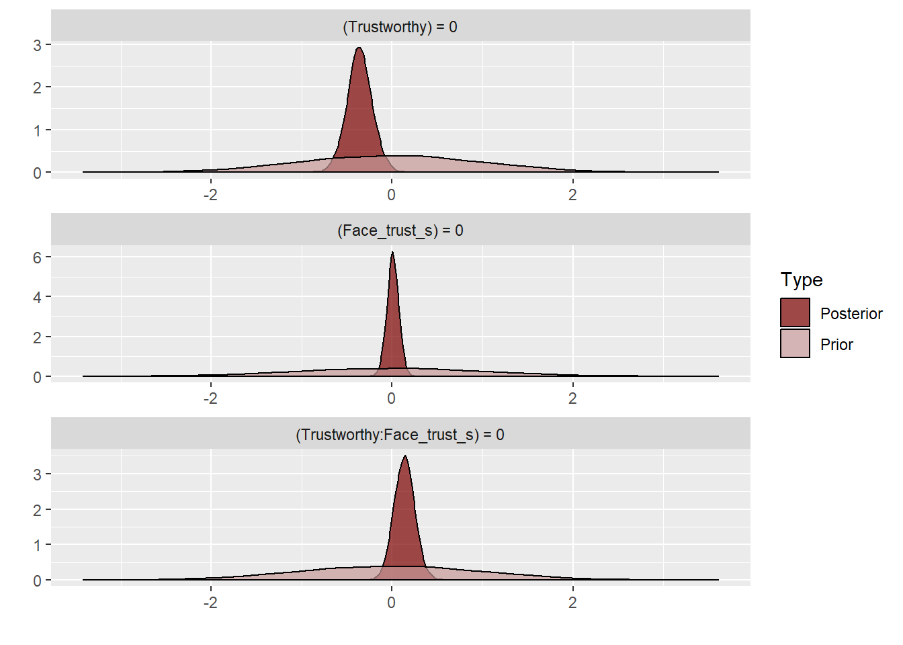
NOTE, Bayes Factors are very sensitive to the priors, and it is easy to BF-hack ‘marginal’ results. Pre-registration is useful here as well.
Model comparison
In some cases we are not interested in making direct inferences about the parameter values but are interested in competing models. This is particularly the case if we are worried about overfitting - since more parameters will always improvde the fit of the model.
mod_rt3 <- brm(RT ~ 1 + Trustworthy + Face_trust_s +
(1 + Trustworthy + Face_trust_s | Subject) +
(1 + Trustworthy + Face_trust_s | Stimuli),
prior = pp, family = gaussian(), data = d,
iter = 2e3, warmup = 1e3,
chains = 6, cores = n_cores)## Compiling the C++ model## Start samplingThe current gold standard for this kind of model comparison is approximate leave-one-out cross validation (LOO). Note that this can be computationally taxing. An alternative, also supported by brms, is WAIC - (Widely Applicable Information Criterion).
#only run if you have time to wait a bit..
loo2 <- loo(mod_rt2, cores = n_cores, reloo = T)
loo3 <- loo(mod_rt3, cores = n_cores, reloo = T)(For the purpose of this workshop we ignore the warning, but we really shouldn’t be..)
compare_ic(loo2, loo3)## LOOIC SE
## mod_rt2 7570.42 365.7
## mod_rt3 7569.60 369.5
## mod_rt2 - mod_rt3 0.81 6.8There is no robust difference in predictive performance between the models.
There is a lot more to be said about LOO, and there is great online documentation for it.
Appendix: Refitting the model
This is not a full analysis, but just a brief demonstration of how it could have looked if we had fitted the model to the log-transformed response times instead.
ff <-
bf(RT_log ~ 1 + Trustworthy + Face_trust_s + Trustworthy:Face_trust_s +
(1 + Trustworthy + Face_trust_s + Trustworthy:Face_trust_s | Subject) +
(1 + Trustworthy + Face_trust_s + Trustworthy:Face_trust_s | Stimuli))
pp <- c(set_prior("normal(0.4, .2)", class = "Intercept"),
set_prior("normal(0,.2)", class = "b"), #this is for the population average slopes
set_prior("normal(0,.2)", class = "sd", group = "Subject"),
set_prior("normal(0,.2)", class = "sd", group = "Stimuli"),
set_prior("normal(0,.5)", class = "sigma"),
set_prior("lkj(3)", class = "cor", group = "Stimuli"),
set_prior("lkj(3)", class = "cor", group = "Subject"))
mod_rt_log <- brm(formula = ff, data = d,
family = gaussian(), prior = pp,
iter = 2e3, warmup = 1e3,
chains = 6, cores = n_cores)## Compiling the C++ model## Start samplingpp_check(mod_rt_log)## Using 10 posterior samples for ppc type 'dens_overlay' by default.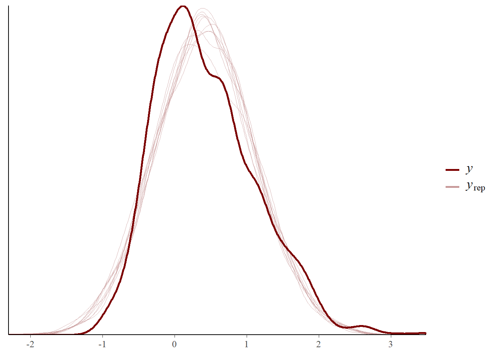
#make a matrix of posterior predictions
y_pred <- predict(mod_rt_log,
nsamples = 500, #500 samples per row of the original data frame
summary = F) #if =TRUE, then we will get the mean and 95% CIs instead#minimum value
ppc_stat(y = d$RT_log, yrep = y_pred,
stat = "min",
binwidth = 0.025)#maximum value
ppc_stat(y = d$RT_log, yrep = y_pred,
stat = "max",
binwidth = 0.025)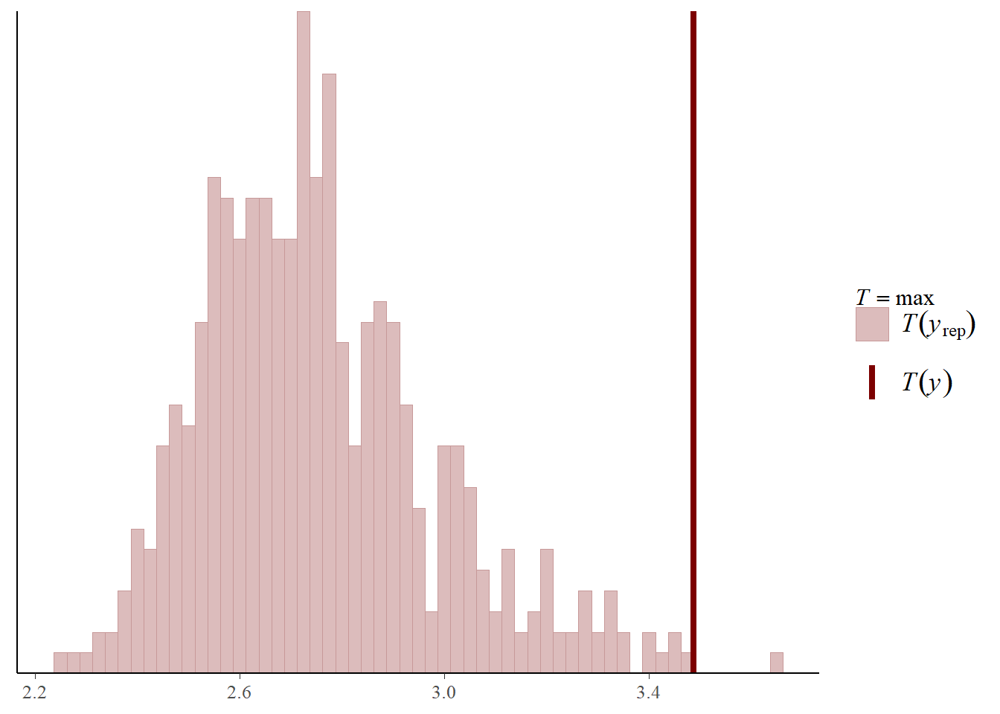
ppc_stat_grouped(y = d$RT_log,
yrep = y_pred,
group = d$Trustworthy_fac,
binwidth = 0.005)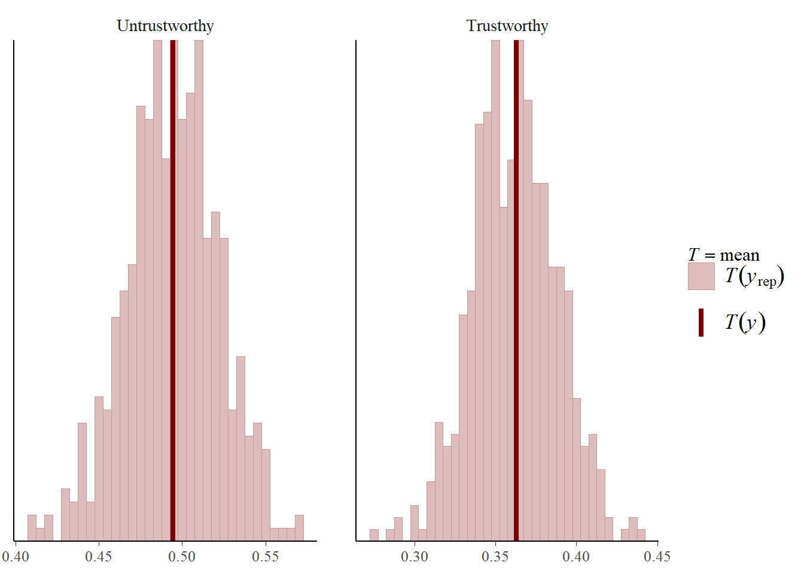
We can see the the posterior predidictions are better than before. The downside is that now all our predictors are on a log scale:
post <- posterior_samples(mod_rt_log, "^b")
mcmc_areas(post,
prob = 0.8,
prob_outer = 0.95)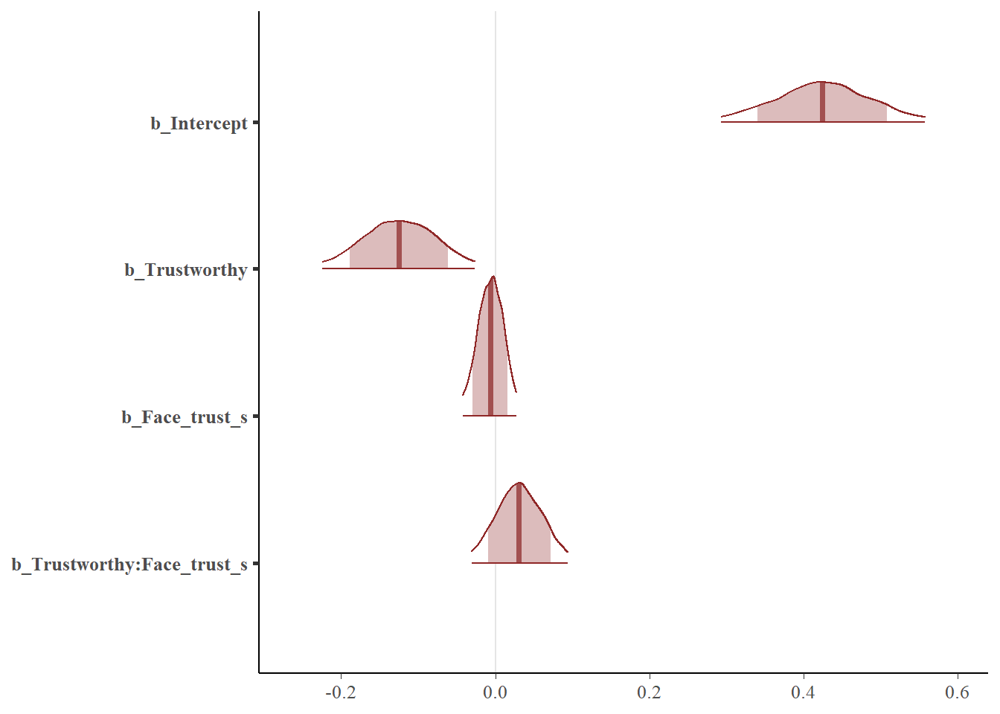
Alternatively we would have changed the likelihood used in the model, using a distribution known to be very good with human response times like the ex-Gaussian (supported by brms). See Heathcote, Popiel & Mewhort, 1991 .